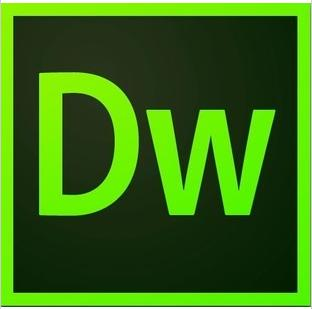

Adobe Dreamweaver, referred to as "DW", the Chinese name "Dreamweaver" is the United States MACROMEDIA company developed a set of web production and management of the site in a WYSIWYG webpage editor. DW is the first visual web development tool for professional web designers that makes it easy to create dynamic web pages that span platform limitations and cross browser limitations.
